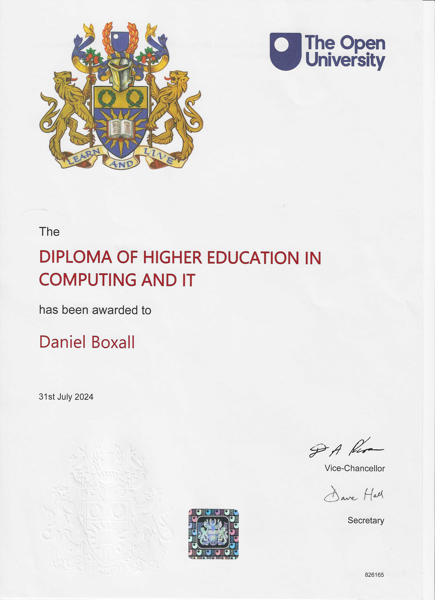

Education & Qualifications
- BSc (Hons) Business Information Technology
University of Salford – Currently studying
- Diploma of Higher Education (DipHE) Computing & IT
The Open University – Awarded 2024

- Diploma in Computing & IT
The Open University - Awarded 2023